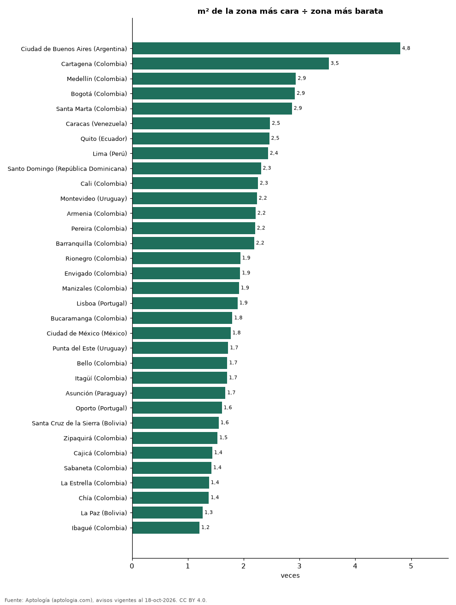

Cuántas veces más cuesta el barrio más caro que el más barato: brecha del metro cuadrado en 33 ciudades de Latinoamérica y Portugal (octubre 2026)
Estudio con datos abiertos (CC BY 4.0). Versión original: https://github.com/elbroker/aptologia-datos/tree/main/estudios/brecha-entre-el-barrio-mas-caro-y-el-mas-barato-ciudades-latinoamerica-2026 · DOI: 10.5281/zenodo.23475786
En Ciudad de Buenos Aires (Argentina) el metro cuadrado de Puerto Madero (USD 5.712) cuesta 4,8 veces el de Nueva Pompeya (USD 1.189), la mayor brecha entre zonas de 33 ciudades. La brecha más pequeña está en Ibagué (Colombia): 1,2 veces entre Varsovia y Picaleña y Mirolindo.
Resumen: comparamos la mediana del precio por m² de apartamentos en venta en 918 zonas con 30 avisos o más de 33 ciudades con al menos 5 zonas.
Actualizado: 18 de octubre de 2026 (datos del 18 de octubre de 2026) · Próxima actualización: mensual.

Resumen
| Indicador | Valor |
|---|---|
| Mayor brecha | Ciudad de Buenos Aires (Argentina): 4,8× |
| Menor brecha | Ibagué (Colombia): 1,2× |
| Ciudades | 33 |
Zona más cara y más barata por ciudad
| Ciudad | Zona más cara | Zona más barata | Veces | Zonas |
|---|---|---|---|---|
| Ciudad de Buenos Aires (Argentina) | Puerto Madero (USD 5.712) | Nueva Pompeya (USD 1.189) | 4,8 | 46 |
| Cartagena (Colombia) | El Centro (USD 4.208) | Ternera (USD 1.194) | 3,5 | 30 |
| Medellín (Colombia) | Lalinde (USD 3.572) | Centro (USD 1.217) | 2,9 | 78 |
| Bogotá (Colombia) | El Virrey (USD 3.666) | Tierra Buena (USD 1.257) | 2,9 | 175 |
| Santa Marta (Colombia) | Pozos Colorado (USD 3.880) | Jardín (USD 1.355) | 2,9 | 18 |
| Caracas (Venezuela) | Chacao (USD 2.472) | Sucre (USD 1.000) | 2,5 | 5 |
| Quito (Ecuador) | Cumbayá (USD 1.578) | Carcelén (USD 642) | 2,5 | 22 |
| Lima (Perú) | Barranco (USD 2.624) | Los Olivos (USD 1.078) | 2,4 | 19 |
| Santo Domingo (República Dominicana) | Piantini (USD 2.633) | Prado Oriental (USD 1.140) | 2,3 | 27 |
| Cali (Colombia) | Pance (USD 2.199) | Torres de Comfandi (USD 975) | 2,3 | 66 |
| Montevideo (Uruguay) | Puerto Buceo (USD 4.169) | Unión (USD 1.864) | 2,2 | 23 |
| Armenia (Colombia) | El Caimo (USD 2.465) | Centro (USD 1.114) | 2,2 | 20 |
| Pereira (Colombia) | Pinares Alto (USD 2.514) | Centro (USD 1.140) | 2,2 | 26 |
| Barranquilla (Colombia) | Río Alto (USD 2.212) | Puerta Dorada (USD 1.011) | 2,2 | 44 |
| Rionegro (Colombia) | Llanogrande (USD 3.490) | Cimarronas (USD 1.800) | 1,9 | 18 |
| Envigado (Colombia) | Las Palmas (USD 3.243) | Alcalá (USD 1.674) | 1,9 | 38 |
| Manizales (Colombia) | Cerro de Oro (USD 2.541) | Campohermoso (USD 1.325) | 1,9 | 22 |
| Lisboa (Portugal) | Santo António (USD 10.565) | Olivais (USD 5.590) | 1,9 | 20 |
| Bucaramanga (Colombia) | Lagos del Cacique (USD 2.255) | Provenza (USD 1.255) | 1,8 | 20 |
| Ciudad de México (México) | Florida (USD 4.112) | Villa Coyoacán (USD 2.329) | 1,8 | 50 |
| Punta del Este (Uruguay) | Manantiales (USD 4.880) | Cantegril (USD 2.833) | 1,7 | 13 |
| Bello (Colombia) | Ciudad Fabricato (USD 2.318) | Cabañitas (USD 1.358) | 1,7 | 18 |
| Itagüí (Colombia) | Simón Bolívar (USD 2.677) | San Gabriel (USD 1.571) | 1,7 | 13 |
| Asunción (Paraguay) | Manorá (USD 2.314) | Ciudad Nueva (USD 1.383) | 1,7 | 19 |
| Oporto (Portugal) | Aldoar, Foz do Douro e Nevogilde (USD 8.138) | Ramalde (USD 5.057) | 1,6 | 7 |
| Santa Cruz de la Sierra (Bolivia) | Equipetrol (USD 1.553) | Este (USD 1.000) | 1,6 | 9 |
| Zipaquirá (Colombia) | Algarra III (USD 1.509) | Villa María (USD 985) | 1,5 | 5 |
| Cajicá (Colombia) | Calahorra (USD 2.163) | Capellanía (USD 1.504) | 1,4 | 10 |
| Sabaneta (Colombia) | Alto de las Flores (USD 2.458) | María Auxiliadora (USD 1.728) | 1,4 | 31 |
| La Estrella (Colombia) | Toledo (USD 2.329) | La Tablaza (USD 1.690) | 1,4 | 6 |
| Chía (Colombia) | Vereda la Balsa (USD 2.153) | Samaria (USD 1.564) | 1,4 | 8 |
| La Paz (Bolivia) | Calacoto (USD 1.241) | Irpavi (USD 981) | 1,3 | 5 |
| Ibagué (Colombia) | Varsovia (USD 1.543) | Picaleña y Mirolindo (USD 1.277) | 1,2 | 7 |
Solo zonas (barrio, distrito, comuna, colonia o sector) con 30 avisos o más con área; cuantas más zonas mide una ciudad, mayor tiende a ser la brecha.
Preguntas frecuentes
¿Qué ciudad tiene más desigualdad de precios entre barrios? Ciudad de Buenos Aires (Argentina): 4,8 veces entre Puerto Madero y Nueva Pompeya.
¿Cuál es el barrio más caro de Bogotá por m²? El Virrey, con USD 3.666 por m².
Metodología
- Fuente: exportes nocturnos de la base de datos de Aptología (aptologia.com) del 18 de octubre de 2026: avisos vigentes de vivienda en portales inmobiliarios de 13 países, recogidos por Aptología y vistos en línea entre el 11 y el 18 de octubre de 2026. Corte: 18 de octubre de 2026.
- Depuración: se eliminan duplicados exactos (misma ciudad, zona, tipo, precio, moneda, área, habitaciones y baños) y los precios fuera del percentil 1–99 de cada país, operación, moneda y tipo; el precio por m² usa solo avisos con área declarada entre 12 y 2.000 m² y también se recorta al P1–P99.
- Qué se mide: precios pedidos (publicados), no precios de cierre. En arriendo, el canon mensual sin administración, gastos comunes ni condominio.
- Muestra mínima: cada cifra publicada se apoya en al menos 30 avisos; las celdas con menos se omiten.
- Monedas: nunca se mezclan avisos de monedas distintas sin convertirlos. Conversión a dólares con la tasa de mercado de ExchangeRate-API (open.er-api.com, actualización del 18 Oct 2026): 1 USD = 3.182,80 COP, 1 USD = 18,47 M.N, 1 USD = 5,09 BRL, 1 USD = 3,44 PEN, 1 USD = 982,44 CLP, 1 USD = 1.514,57 ARS, 1 USD = 40,20 UYU, 1 USD = 5.705,37 PYG, 1 USD = 61,27 DOP, 1 USD = 0,89 EUR, 1 USD = 11,72 BOB; la UF chilena a 41.178,64 CLP (mindicador,cl. 18-oct-2026). Los avisos publicados en dólares se usan tal cual.
- Monedas: en cada ciudad y operación se usa solo la moneda mayoritaria de los avisos (los avisos en otra moneda se excluyen) y la mediana se convierte a dólares con la tasa citada; nunca se promedian avisos de monedas distintas.
- Limitaciones: la cobertura depende de los portales que recorre Aptología en cada país y es mayor en las ciudades grandes y en los segmentos medio-alto y alto; el área es la que declara el aviso, sin verificar; los nombres de zona vienen de los portales.
- Privacidad: solo se publican agregados; no se publica ningún dato personal, enlace a avisos ni nombre de anunciante.
- Datos abiertos: datos.csv, licencia CC BY 4.0.
Cómo citar
Pinzón Pineda, D. M. (2026). Cuántas veces más cuesta el barrio más caro que el más barato: brecha del metro cuadrado en 33 ciudades de Latinoamérica y Portugal (octubre 2026). Aptología (aptologia.com). https://github.com/elbroker/aptologia-datos/tree/main/estudios/brecha-entre-el-barrio-mas-caro-y-el-mas-barato-ciudades-latinoamerica-2026. Datos: datos.csv, licencia CC BY 4.0.